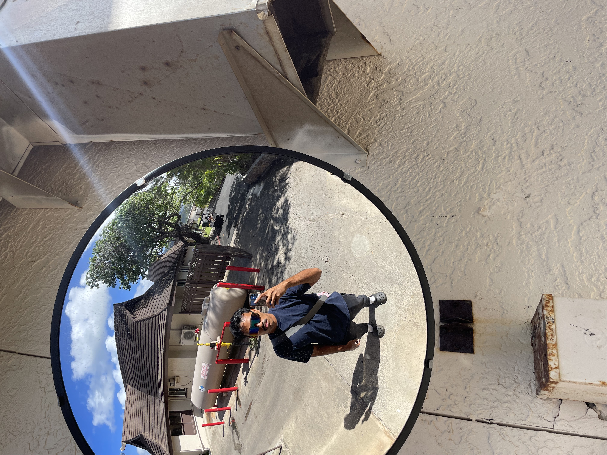

Web Graphics
Questions
- What kind of photos are good to encode using JPEG?
- This type of photo is best for anything that has wide range of colors like landscapes, portraits, and anything with smooth gradients.
- What kind of photos are good to encode using GIF?
- This is a good choice for simple colors, sharp images, animations, small icons and anything that has sharp edges.
- What is unique about the PNG format?
- Anthing that is transparent , for lossless compression, and wide color scope, this would be the best choice
- How do you resize your photo to the size it should be displayed?
- You resize them by using minor tweaks with CSS. Creating a class and inputing the percentage of the image size adjustment will change the look of the images.
- Why should you resize photos using photo editing software instead of resizing it using CSS?
- Because using editing software will preserve the quality of the photo better. Resizing it with CSS will stretch or shrink the image.
Images
This is a picture of me.

Cat images